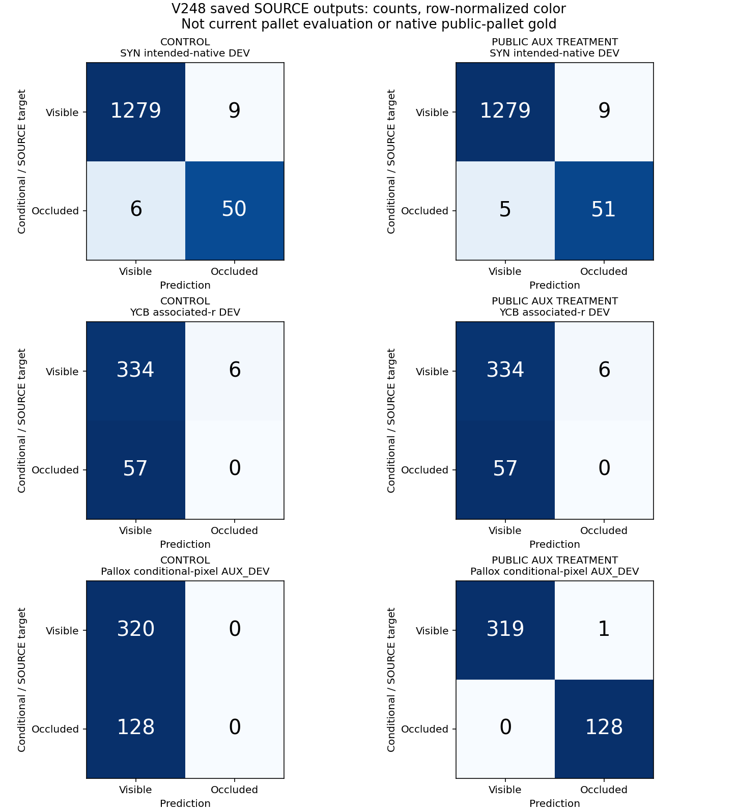

AUX_DEV: 보임319/320, 가림128/128. 기존 YCB associated-r 가림: 두 학습군 모두0/57. 모델 채택·새 current 평가 없음.
| 목표 | 학습군 | 보임 recall | 가림 recall | 가림 precision | 보류 |
|---|---|---|---|---|---|
| SYN intended-native DEV | 대조군 | 99.30% | 89.29% | 84.75% | 0.00% |
| YCB associated-r DEV | 대조군 | 98.24% | 0.00% | 0.00% | 0.00% |
| Pallox conditional-pixel AUX_DEV | 대조군 | 100.00% | 0.00% | 정의 불가 | 0.00% |
| SYN intended-native DEV | 보조학습 | 99.30% | 91.07% | 85.00% | 0.00% |
| YCB associated-r DEV | 보조학습 | 98.24% | 0.00% | 0.00% | 0.00% |
| Pallox conditional-pixel AUX_DEV | 보조학습 | 99.69% | 100.00% | 99.22% | 0.00% |
이 값은 SOURCE와 조건부 AUX 개발 자료의 결과입니다. 현재 팔레트 평가 정확도가 아닙니다. 제외된 S/U 7,423행은 모델 보류로 세지 않았습니다.

미리 정한 실제 SOURCE crop 보기 · 비교 CSV · 전체 한국어 보고서
별도 생성한 AUX 픽셀 query이며, 원 native 키포인트를 옮기거나 그 정답으로 바꾸지 않았습니다. 같은 물리 bin의 조건부 교사 라벨이라 native·SELF 대응 및 독립 물리 장면 일반화는 미확인입니다.